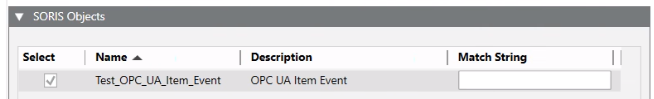
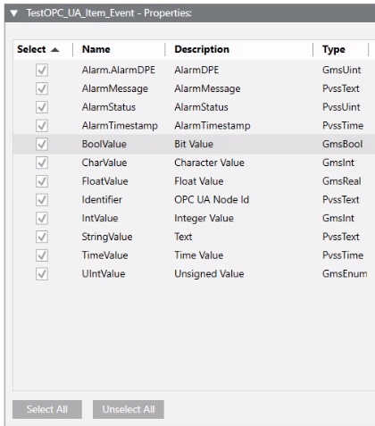
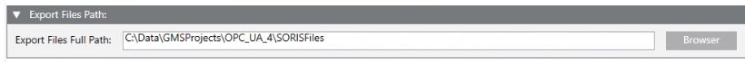

Export the Data Model
- Select Project > System Settings > Libraries.
- Select the SORIS tab.
- Drag the custom object model from System Browser into the SORIS Objects expander.
- In the SORIS Objects expander, select the check box that corresponds to the custom object model.

- In the [custom object model] – Properties expander, click Select All to select all the properties.

- (Optional) The Export Files Full Path expander provides the following default output directory: [Installation Drive]:\[Installation Folder]\[GMSMainProject]Data\[OPC_UA_Client]\SORISFiles. You may want to click Browser, and specify a different output directory.

- Click Save
 .
. - The system creates the following files: [name].cs, [name].java, [name].owl, [name].yaml.
- Copy and paste the OWL file ([name].owl) into the data models adapter installation folder:
C:\Program Files (x86)\[Company Name]\SORIS OPC UA Adapter\DataModels.
- The object model is now available in the Object model drop-down list of the OPC UA Client Configuration Data Settings section in the OPC UA.